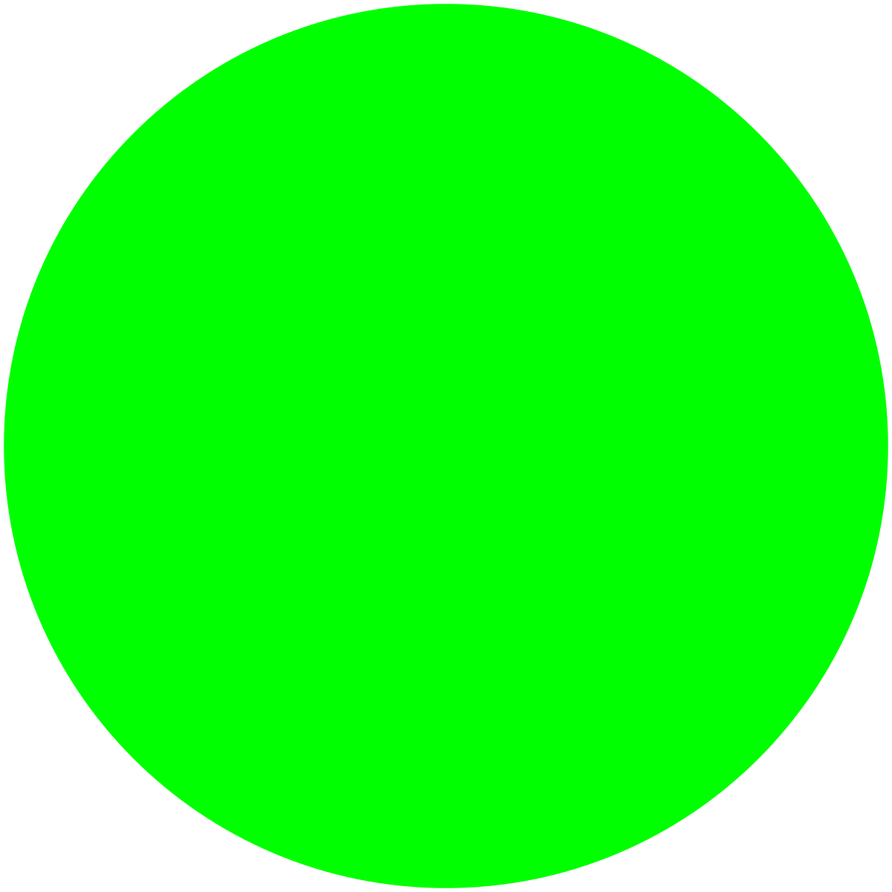

immagini vettoriali
|
L'immagine vettoriale è una tecnica di
rappresentazione dell'immagine, o di un
carattere tipografico generato
da un computer, in cui gli elementi grafici che
la costituiscono sono un insieme di primitive
geometriche,
alle quali possono essere
attribuiti colori e
anche sfumature. |
|
immagini raster
|  |
La grafica raster (detta anche grafica
bitmap
o
semplicemente bitmap), nella computer grafica, è
una
tecnica usata per descrivere un'immagine in
formato
digitale che si contrappone alla grafica
vettoriale.
Il termine raster (in italiano: trama, reticolo,
griglia o rasta) ha origine nella tecnologia
televisiva analogica, ovvero dal termine che
indica
le righe orizzontali (dette anche scan line o
linee
di scansione, dei televisori o dei monitor).
L'immagine qui a fianco é una normalissima
immagine png quindi di tipo raster.
|
conclusioni
|
In conclusione all'interno di un lavoro dove si devono gestire elementi fotografici con diverse tonalità, sfumature, effetti e miscele di colore è meglio lavorare con immagini raster. Se invece il progetto è più simile ad un disegno o ad un illustrazione è d'obbligo lavorare con un formato immagine vettoriales |